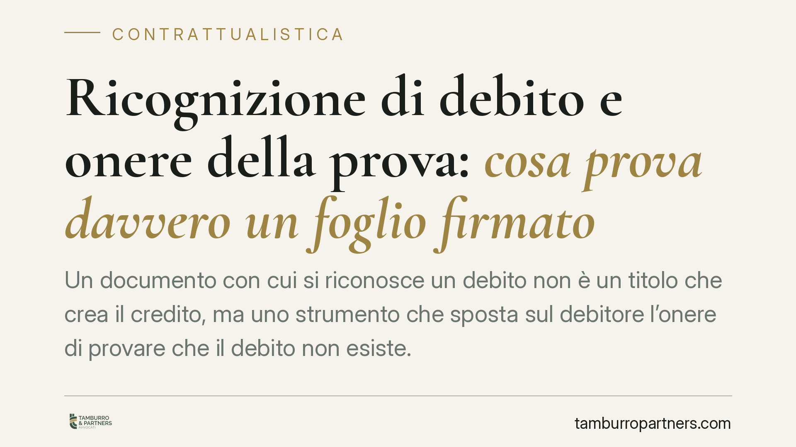

Ricognizione di debito e onere della prova: cosa prova davvero un foglio firmato
Un documento con cui si riconosce un debito non è un titolo che crea il credito, ma uno strumento che sposta sul debitore l'onere di provare che il debito non esiste. La distinzione è tecnica ma decisiva nelle cause di recupero. Vediamo cosa dice l'art. 1988 c.c. e cosa accade quando la firma viene contestata.

Il fatto e perché conta
Nel recupero dei crediti capita spesso che il debitore abbia firmato, in passato, una dichiarazione con cui ammette di dovere una somma. È la cosiddetta ricognizione di debito (o promessa di pagamento), disciplinata dall'art. 1988 del Codice civile.
La domanda ricorrente è semplice: basta quel foglio firmato per vincere la causa? La risposta è articolata. Quel documento offre un vantaggio processuale rilevante, ma non è una garanzia automatica di vittoria. Comprenderne la reale portata evita aspettative sbagliate, sia per chi vanta il credito sia per chi lo contesta.
Inquadramento normativo
L'art. 1988 c.c. stabilisce che la ricognizione di debito «dispensa colui a favore del quale è fatta dall'onere di provare il rapporto fondamentale. L'esistenza di questo si presume fino a prova contraria».
Si tratta di un'inversione dell'onere della prova rispetto alla regola generale dell'art. 2697 c.c., secondo cui chi vuol far valere un diritto in giudizio deve provare i fatti che ne costituiscono il fondamento. In condizioni ordinarie sarebbe il creditore a dover dimostrare l'esistenza e l'ammontare del credito. Con una ricognizione valida, invece, il rapporto si presume esistente: sarà il debitore a dover provare il contrario (ad esempio che il debito non è mai sorto, oppure che è stato estinto).
È importante sottolineare la natura di questa presunzione. Secondo l'orientamento consolidato della Corte di Cassazione, la ricognizione di debito produce una astrazione meramente processuale, non sostanziale. In altri termini, il documento non crea un rapporto obbligatorio nuovo e autonomo: non è un titolo del credito a sé stante. Si limita a far presumere l'esistenza del rapporto fondamentale già sorto tra le parti. Resta quindi sempre aperta la possibilità, per il debitore, di dimostrare che quel rapporto sottostante non esiste o si è estinto.
Implicazioni pratiche
Il primo effetto riguarda il disconoscimento della firma. Se il debitore contesta di aver sottoscritto il documento, il meccanismo si sposta sul piano processuale: a fronte del disconoscimento della scrittura privata (art. 214 c.p.c.), chi intende avvalersi del documento può proporre istanza di verificazione della scrittura (art. 216 c.p.c.), chiedendo di accertarne la provenienza, anche tramite consulenza grafologica o prova testimoniale.
Su questo punto si colloca un profilo rilevante secondo un recente orientamento di legittimità: il creditore titolare di una ricognizione non perde il vantaggio dell'inversione dell'onere della prova per il solo fatto di aver chiesto, in via subordinata, prove testimoniali o la verificazione della scrittura. La richiesta di strumenti probatori ulteriori, cioè, non equivale a una rinuncia alla presunzione favorevole.
Il secondo effetto riguarda gli eredi. La posizione probatoria derivante dalla ricognizione si trasmette: chi succede nel credito eredita anche il vantaggio dell'inversione dell'onere, così come chi succede nel debito eredita l'onere di fornire la prova contraria. Questo rileva nelle cause in cui il debitore originario è deceduto e il creditore agisce nei confronti degli eredi.
Resta fermo il limite di fondo: trattandosi di astrazione processuale, la presunzione cade se il debitore riesce a dimostrare l'inesistenza o l'estinzione del rapporto fondamentale. Il documento firmato è dunque uno strumento probatorio robusto, ma non inattaccabile.
Cosa fare in concreto
- Verificate la completezza del documento. Accertate che la dichiarazione contenga un riferimento sufficientemente chiaro all'importo e che la firma sia leggibile e attribuibile.
- Conservate le prove del rapporto sottostante. Anche in presenza di una ricognizione, è opportuno mantenere la documentazione del rapporto originario (fatture, contratti, estratti di pagamento), utile se la presunzione venisse contestata.
- Agite tempestivamente in caso di disconoscimento. Se la controparte disconosce la firma, valutate senza ritardo la proposizione dell'istanza di verificazione ex art. 216 c.p.c., individuando per tempo i mezzi di prova disponibili.
- Mappate la successione. Se il debitore è deceduto, è opportuno ricostruire la posizione degli eredi prima di avviare l'azione.
- Valutate il documento in via preliminare. È opportuno che ogni dichiarazione ricognitiva sia esaminata sotto il profilo della validità e dell'efficacia probatoria prima dell'avvio del contenzioso.
Disclaimer
Contributo informativo a cura di Tamburro & Partners Avvocati – Avv. Giuseppe Tamburro. Non costituisce parere legale.
Ogni contratto ha il suo equilibrio.
Se vuoi una revisione delle clausole o una redazione su misura, scrivi allo studio. Ti rispondiamo entro un giorno lavorativo.